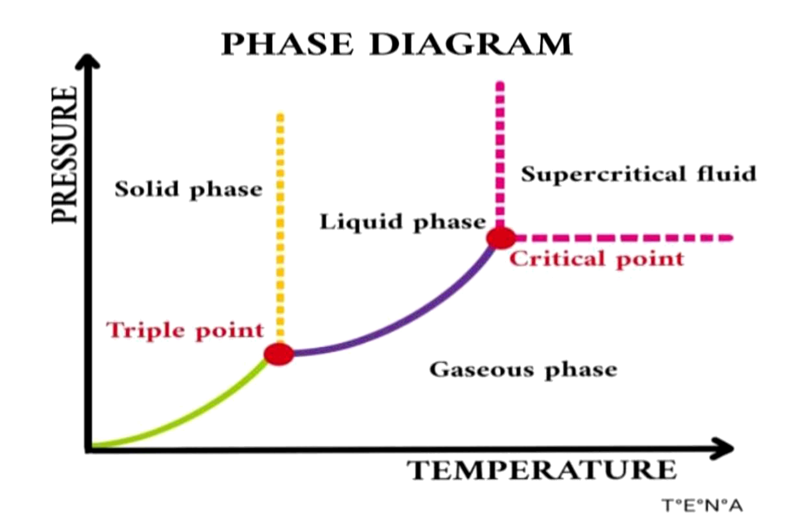
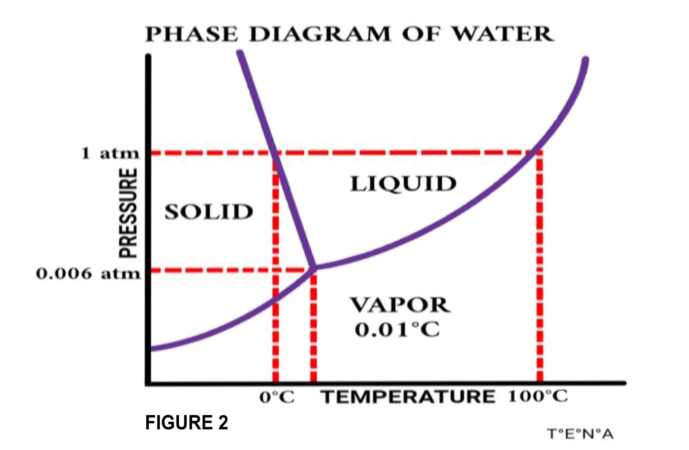
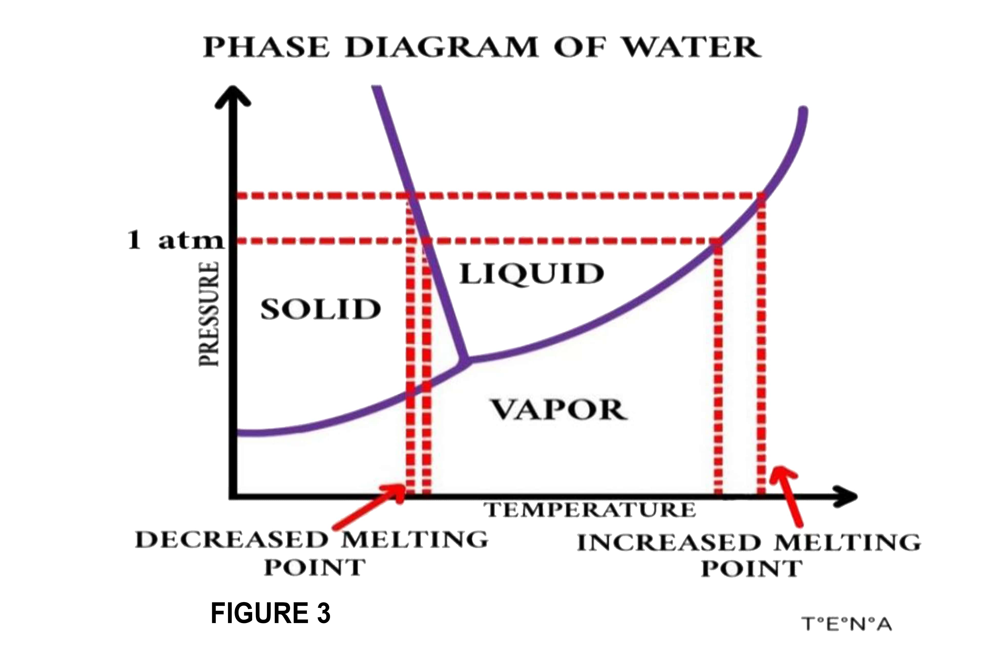
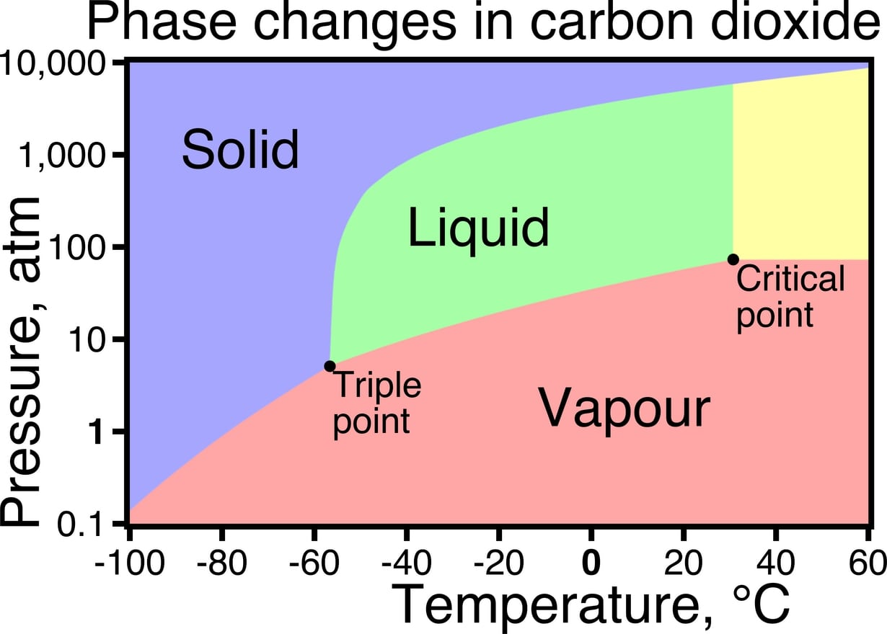
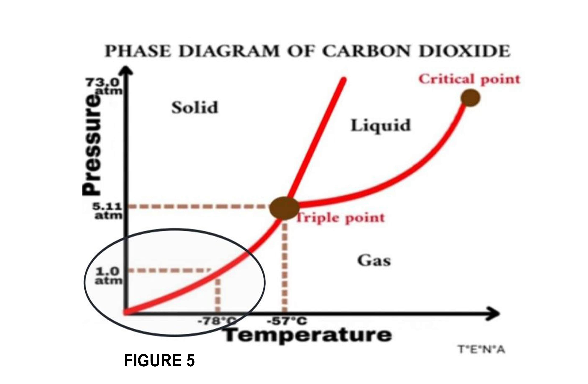
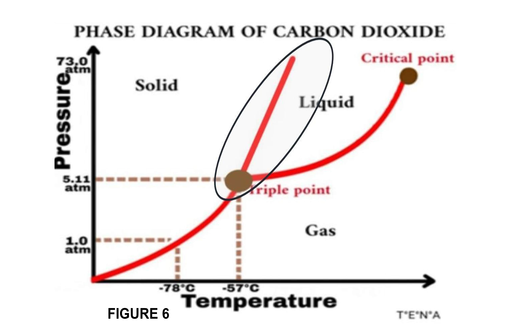

Lesson #4: PHASE DIAGRAM OF WATER AND CARBON DIOXIDE
Phase Change
When energy is added or removed, transformations from one phase to another will occur e.g. a change of solid-phase having the greatest order to gas phase having the highest randomness, or vice versa. Consider the phase change of water below.
- Freezing is the process of turning liquid to go into solid. Water will become ice if its temperature reaches around 0°C, making the molecules stick together and form a solid (ice).
- On the other hand, melting is the process of turning solid into liquid. Ice will melt if heat energy (melting point) from the warmer air is absorbed and enough to break apart the particle arrangements of ice water allowing the molecules to move faster, breaking the hydrogen bonds between molecules to form liquid water.
- Evaporation is the process of turning liquid to go into gas. Water will become water vapor if heat is added up, making the molecules of water move faster until it reaches its boiling point. When this happens, all of the molecules go further apart and become a gas.
- On the other hand, condensation is the process of turning gas into liquid. Water vapor will condense if the molecules in a gas cool down, losing the heat energy and making the molecules slow down. As it slows down, the gas molecules move closer to other gas molecules until these molecules collect together to form a liquid.
After knowing the phase changes, the next thing to deal with is the phase diagram of water and will then be compared to the phase diagram of carbon dioxide. Prior to that, let’s be familiar with what is phase diagram.
Phase Diagram
A phase diagram is a graph that relates pressure and temperature to the state of matter. These two important intensive properties will help us determine the phases of matter. From the given figure 1 on the phase diagram, we see the three sections represented by the three phases of matter (solid, liquid, and gas). Lines in the graph are boundaries that signify the dynamic equilibrium between two or three phases.
- Changes happen by either changing the temperature or pressure. A couple of interesting two points are given in the graph which are triple point and the critical point.
-
- Triple point is the point where at a certain pressure and temperature at equilibrium all three phases of a substance co-exist, meaning it is the same rate where solid becomes liquid or gas becomes liquid.
- On the other hand, a critical point corresponds to a specific pressure and temperature above which the fluid has both properties of liquid and vapor. This would also mean that liquid and gas are at the same density, which made them indistinguishable.
Going further the critical point, everything beyond this point is considered as “supercritical fluid”. Critical temperature is where a substance is impossible to liquefy no matter how you increase or compress the substance.
Phase Diagram of Water
The use of phase diagram is that it can help us easily identify and tell the state of a substance at a given temperature and pressure. Figure 2 shows the phase diagram of water.
We know already that the line separating any two regions or sections indicates conditions under which two phases co-exist in equilibrium. Triple point is shown at which all three phases of water can exist at equilibrium in 0.006 atm and 0.01°C. Another is that, at a point of 1.00 atm and 0°C as you extend the line their intersection is in its freezing point and melting point. Now if we increase the temperature up to 100°C at a constant pressure of 1 atm, the water will be in its boiling point and ready to become a gas. This will give us a conclusion that at 1 atm water exist at all phases.

From figure 3, the phase diagram of water tells us that the boundary between the solid and liquid, the slope becomes negative. This happens because water has a special property wherein if the water is in its solid state the molecules are further apart than in a liquid state. This would mean that for some given volume of liquid water, liquid water is denser than solid water (ice cube).
Phase Diagram of Carbon Dioxide
Figure 4 above as shown above is the phase diagram of carbon dioxide which is generally similar to other substances. But in comparison with water, it is generally also the same only that there are two important deviations on these properties. Use the simpler representation of the phase diagram shown in figure 5 below to help you cite the differences between the two.
We see that at 1 atm, carbon dioxide sublimes directly to gas. In other words, carbon dioxide at a constant pressure of 1 atm as temperature increases from -78°C, we can see solid and gas states not in the liquid phase. The liquid phase of carbon dioxide could only be gotten if we increase the pressure and temperature. Triple point in this diagram of carbon dioxide could be seen at 1 atm and temperature of -57°C.
The main difference is that the boundary between solid and liquid states of carbon dioxide is on a positive slope. This positive slope would convey to us that solid carbon dioxide is denser than liquid carbon dioxide. This scenario can be visualized by putting the solid carbon dioxide into liquid carbon dioxide. It can be seen that the solid carbon dioxide will sink. Another thing to note is that we can only have a liquid carbon dioxide if we increase the temperature which is shown in figure 6. Not like in water, at constant temperature we can make a solid to a liquid by increasing the pressure of the water.
Knowing now the differences, it should be made clear that unlike most materials, water is denser as a liquid than as a solid. Along this behavior of the molecules of water, there is an increasing pressure that favors the liquid instead of the solid. The significance of this behavior is shown in the negative slope of water that becomes so important to bring habitat even in colder regions. On the other hand, the positive slope in the phase diagram of carbon dioxide would simply imply solid carbon dioxide does not melt at 1 atm pressure but instead sublimes to yield gaseous CO2.